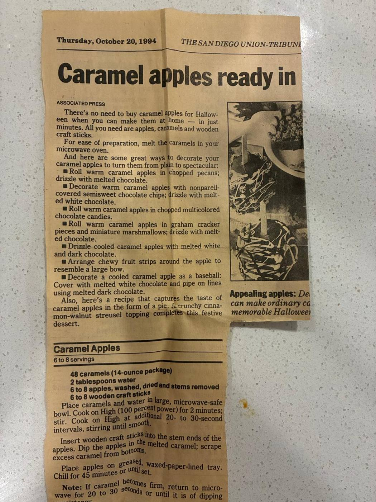

Desserts
Caramel Apples
From the kitchen of Mom
MicrowaveAbout 3 min
Chill45 min
Serves6–8

Mom's original card · tap to enlarge
Ingredients
Method tap a step to mark it done
- Put the caramels and water in a large microwave-safe bowl. Microwave on High for 2 minutes, then stir.
- Keep microwaving on High in 20–30 second bursts, stirring, until smooth.
- Push a craft stick into the stem end of each apple. Dip in the melted caramel and scrape the excess off the bottom.
- Set the apples on a greased, waxed-paper-lined tray. Chill 45 minutes, or until set.
Mom’s tips
- If the caramel gets firm, microwave it again for 20–30 seconds until it's dippable.
- Decorating ideas: roll warm apples in chopped pecans and drizzle with melted chocolate.
- Press nonpareil-covered chocolate chips onto warm apples and drizzle with melted white chocolate.
- Roll warm apples in chopped multicolored chocolate candies.
- Roll warm apples in graham cracker pieces and mini marshmallows, then drizzle with melted chocolate.
- Drizzle cooled apples with melted white and dark chocolate.
- Wrap chewy fruit strips around the apple like a big bow.
- Make a baseball: cover a cooled apple in melted white chocolate and pipe on the stitches with dark chocolate.